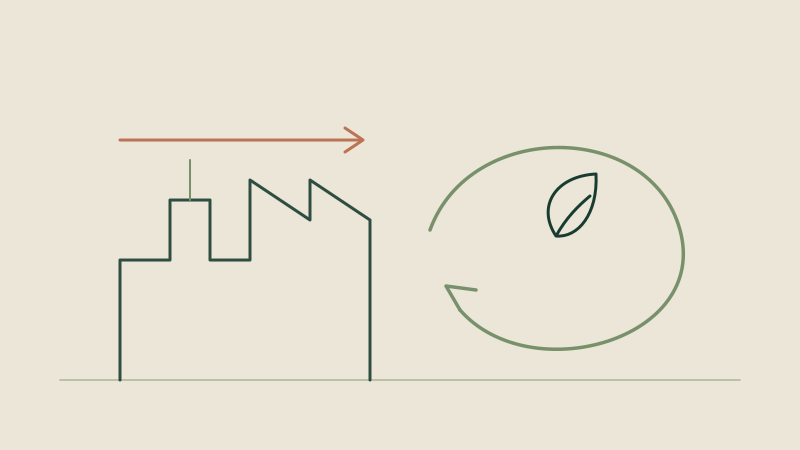
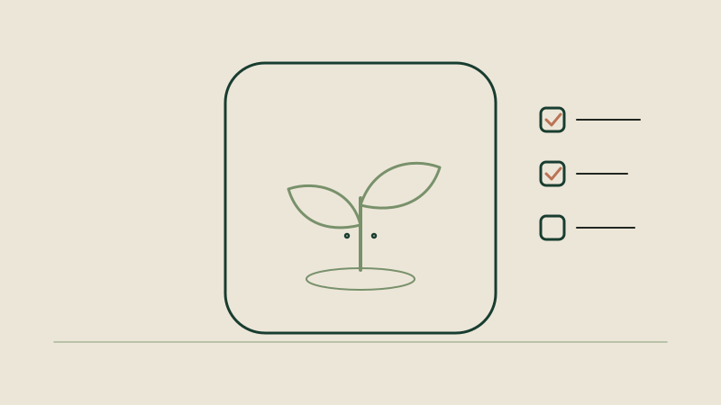
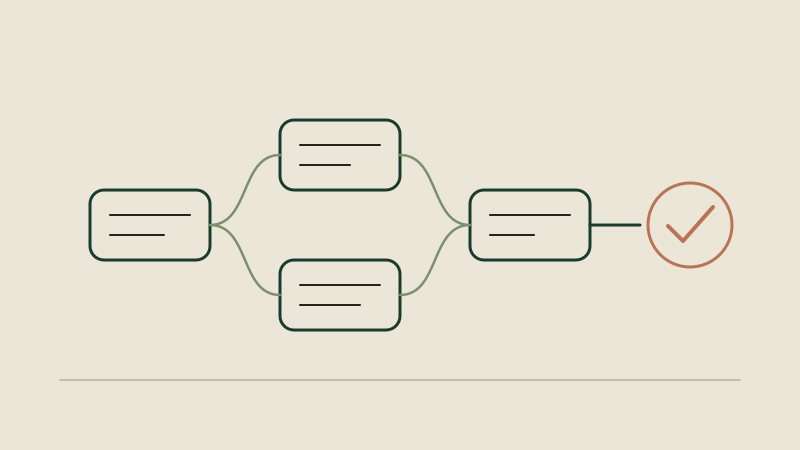
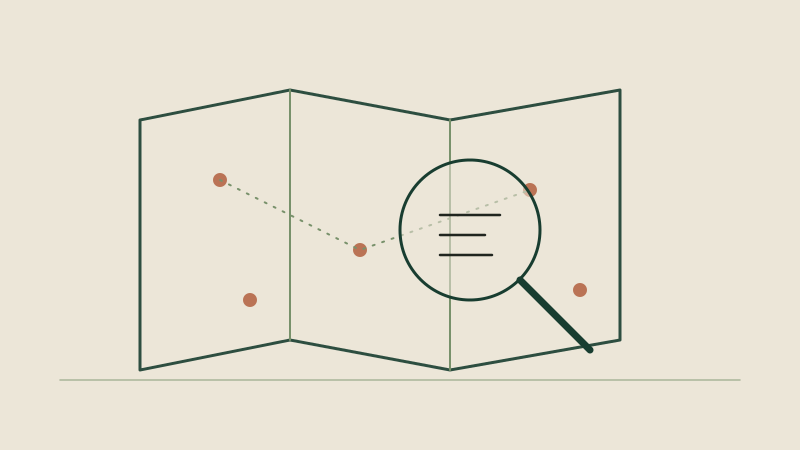

B.Sc. Mechanical Engineering
Azad University, Damavand
Where my story starts: a bachelor's in mechanical engineering.
Read moreEngineering · Economics · Energy
A mechanical engineer with an M.A. in Philosophy, Politics & Economics. I work where technology, policy and markets meet: sustainability, the energy transition and international business development. Based in the 's-Hertogenbosch area, the Netherlands.
I started as a mechanical engineer in Isfahan, doing failure analysis, designing components in AutoCAD and Ansys, and contributing to improvements that lifted operational efficiency by more than 20%. I kept seeing sound technical fixes stall for reasons engineering alone couldn't explain: cost, incentives, ownership, habit. So I took a master's in Philosophy, Politics & Economics in Germany, working alongside my studies throughout, to understand the economic and organisational side of change.
My master's gave me the tools to analyse that: economics, political and institutional analysis, and how decisions get made. My thesis looked at circular-economy transitions in post-industrial cities, written with Duisburg Business & Innovation. I add a practical engineering base and shop-floor experience, most recently on a GMP cleanroom line building insulin pumps. I'm open to roles in international business development, technology and energy policy, engineering and the energy transition.

My story
The seed is my bachelor's in mechanical engineering. Scroll, and every job, study and project since grows on its own branch, in order, up to what I'm building now.
Each branch is a chapter, from my engineering roots to what I'm building now. If one of them speaks to you, I'd like to hear from you.
Azad University, Damavand
Where my story starts: a bachelor's in mechanical engineering.
Read moreSaba-Sim Co., Isfahan
Failure analysis, component design in AutoCAD, analysis in Ansys and cost estimates. Contributed to improvements that raised operational efficiency by more than 20%.
Read more Illustration
IllustrationRole Designed, built and tested it myself
A steel-plate hydrogen-generation system, taken from first concept through construction to practical tests of its gas output.
Outcome A working prototype, tested for gas output.
View project: Hydrogen-generation prototypeTaiwan Trade Center (TAITRA), Tehran
Matched Taiwanese manufacturers with Iranian partners through market research.
Read moreSwitzerland
Started a master's in mechanical engineering, then switched to Philosophy, Politics & Economics.
Read moreWitten/Herdecke University, Germany
Economics, political and institutional analysis, and how decisions get made, studied while working throughout: instructor at Amazon in Witten, then business development consultant at 1&1 in Düsseldorf.
Read more8th International PPE Conference, Witten/Herdecke
Designed banners and logos, created social media content and planned the outreach with the team.
Read moreDuisburg Business & Innovation GmbH
Green-energy and regional innovation projects: milestones, risks, and technical, market and funding research.
Read more
IllustrationRole Author, written with Duisburg Business & Innovation GmbH
How policy, institutions, incentives and cooperation shape the move from linear to circular production in post-industrial Duisburg, compared with Amsterdam and Singapore.
Outcome Completed as part of the M.A. in Philosophy, Politics & Economics.
View project: From Linear to CircularVrije Universiteit Amsterdam
A semester in Amsterdam on sustainability management.
Read more Illustration
IllustrationRole Team member, with an equal share of the analysis and strategy work
A citizen energy cooperative had sold 20% of the shares in a roughly 400-panel solar roof, and needed 70% before it could be built. We worked out why, and how to close the gap.
Outcome A case report with a campaign, buy-in strategy and co-creation plan.
View project: Zon op HaarlemmermeerViCentra (Kaleido), Utrecht
A GMP cleanroom line for insulin pumps: introduced pre-staging before Base Assembly and found a machine risk that led to a permanent engineering fix.
Read more
Role Designed and built it
My personal site, written as plain HTML and hosted free on GitHub Pages, with structured data for search engines and AI assistants and cookieless visitor statistics.
Outcome Live at momohammadi.nl, verified in Google Search Console and imported into Bing.
View project: This website Illustration
IllustrationRole Product owner: defined the product, its rules and safety features, and built it with AI coding tools
An app for meeting new people around Oss through small public hangouts: post a plan, others ask to join, the group chats and meets. References after each meetup build trust.
Outcome In development, not public yet.
View project: Meetout Illustration
IllustrationRole Product owner, adapting the Meetout codebase to a new audience
Dog play dates in Noord-Brabant, starting in Oss. Owners make a profile for their dog, get matched with dogs of similar energy, size and play style, and plan open or private play dates.
Outcome In development, not public yet.
View project: Dogout
IllustrationRole Product owner, working with a team of AI role agents
A no-shame life game for adults with ADHD, informed by CBT techniques: small real-life steps help your avatar grow, and missing a day never costs you anything.
Outcome A playable prototype for playtesting.
View project: Tend
IllustrationRole Designed and built them
Python pipelines that check online sources on a schedule, score new items with AI, draft tailored documents and wait for a human approval before anything is sent.
Outcome In personal use, with human approval before anything is sent.
View project: AI workflow automation
IllustrationRole Designed and built it
An assistant that finds start-ups and organises their contact details by country and city, to speed up market and partner research.
Outcome A working tool that groups start-ups and contacts by country and city.
View project: GPT-based research assistantEngineering builds, research and the products I'm working on now. Open any project for the problem, the approach and my part in it.
IllustrationRole Designed, built and tested it myself
A steel-plate hydrogen-generation system, taken from first concept through construction to practical tests of its gas output.
Outcome A working prototype, tested for gas output.
View project: Hydrogen-generation prototypeRole Designed and built it
An assistant that finds start-ups and organises their contact details by country and city, to speed up market and partner research.
Outcome A working tool that groups start-ups and contacts by country and city.
View project: GPT-based research assistantIllustrationRole Team member, with an equal share of the analysis and strategy work
A citizen energy cooperative had sold 20% of the shares in a roughly 400-panel solar roof, and needed 70% before it could be built. We worked out why, and how to close the gap.
Outcome A case report with a campaign, buy-in strategy and co-creation plan.
View project: Zon op HaarlemmermeerRole Author, written with Duisburg Business & Innovation GmbH
How policy, institutions, incentives and cooperation shape the move from linear to circular production in post-industrial Duisburg, compared with Amsterdam and Singapore.
Outcome Completed as part of the M.A. in Philosophy, Politics & Economics.
View project: From Linear to CircularRole Designed and built it
My personal site, written as plain HTML and hosted free on GitHub Pages, with structured data for search engines and AI assistants and cookieless visitor statistics.
Outcome Live at momohammadi.nl, verified in Google Search Console and imported into Bing.
View project: This websiteIllustrationRole Product owner: defined the product, its rules and safety features, and built it with AI coding tools
An app for meeting new people around Oss through small public hangouts: post a plan, others ask to join, the group chats and meets. References after each meetup build trust.
Outcome In development, not public yet.
View project: MeetoutIllustrationRole Product owner, adapting the Meetout codebase to a new audience
Dog play dates in Noord-Brabant, starting in Oss. Owners make a profile for their dog, get matched with dogs of similar energy, size and play style, and plan open or private play dates.
Outcome In development, not public yet.
View project: DogoutRole Product owner, working with a team of AI role agents
A no-shame life game for adults with ADHD, informed by CBT techniques: small real-life steps help your avatar grow, and missing a day never costs you anything.
Outcome A playable prototype for playtesting.
View project: TendRole Designed and built them
Python pipelines that check online sources on a schedule, score new items with AI, draft tailored documents and wait for a human approval before anything is sent.
Outcome In personal use, with human approval before anything is sent.
View project: AI workflow automationWorked on green-energy and regional innovation projects: tracked milestones, deliverables and risks, and did technical, market and funding research. Wrote my master's thesis on circular-economy transitions in post-industrial cities with the company.
Built Python automation for network monitoring, improving issue detection and quality reporting, together with test-automation partner QiTASC.
Trained new staff on standard operating procedures, quality and safety in a high-volume operation.
Matched Taiwanese manufacturers with Iranian partners through market research.
Contributed to improvements that raised operational efficiency by more than 20%. Did failure analysis, designed components in AutoCAD, supported analysis in Ansys and prepared cost estimates.

Mar 2023 – Apr 2024
International Philosophy, Politics & Economics Conference · Universität Witten/Herdecke
I volunteered on the marketing team for the 8th International PPE Conference 2024, themed "Generation on the EDGE: Environment, Democracy, Globalization and Economics", shaping how the event was presented and communicated.
It gave me hands-on experience in academic event marketing, and a closer look at how good communication supports academic exchange at the intersection of economics, politics and philosophy.
Thesis on circular-economy transitions.
MT, VT, UT Level I/II · RT interpretation Level II · IR Level I
From my M.A. in Philosophy, Politics & Economics
Economic analysis, political economy, institutional economics, cost-benefit thinking, markets and regulation
Policy analysis, governance and decision-making, stakeholder and power mapping, sustainability and energy-transition policy, circular economy
Ethics and responsible innovation, critical thinking, argumentation, analysing trade-offs between competing values
Qualitative and desk research, academic writing, case-study analysis, presenting complex ideas clearly, interdisciplinary teamwork
From engineering and industry
Bottleneck analysis, flow improvement, standardised work, root-cause analysis, work instructions, Lean
GMP, cleanroom operations, medical device assembly, quality control, failure analysis, equipment safety, NDT
Mechanical design, engineering drawings, AutoCAD, Ansys Mechanical, SolidWorks, Python
Cost estimation, project coordination, stakeholder communication, data analysis, market research
Languages
Open to roles in international business development, technology and energy policy, engineering and the energy transition. I'm based in the 's‑Hertogenbosch area and authorised to work in the Netherlands. The quickest way to reach me is email.